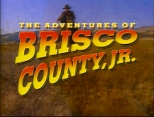
The Adventures of Brisco County Jr.27 episodes Adventures of Sonic the Hedgehog65 episodes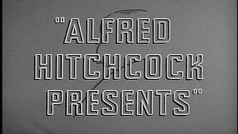
Alfred Hitchcock Presents261 episodes · 7 seasons Amazing Stories45 episodes · 2 seasons Batman: The Animated Series109 episodes · 6 seasons Beavis and Butt-Head211 episodes · 9 seasons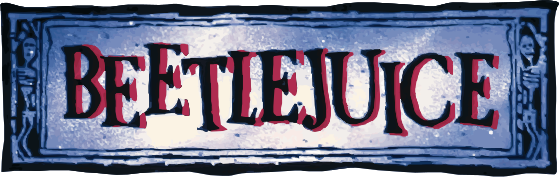
Beetlejuice94 episodes · 4 seasons The Ben Stiller Show13 episodes Biker Mice from Mars65 episodes · 3 seasons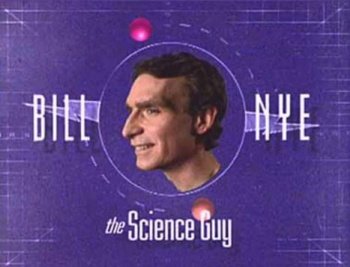
Bill Nye the Science Guy100 episodes · 5 seasons Bobby's World81 episodes · 7 seasons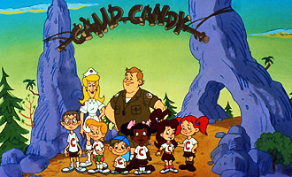
Camp Candy34 episodes · 3 seasons Celebrity Deathmatch93 episodes · 6 seasons Everybody Loves Raymond209 episodes · 9 seasons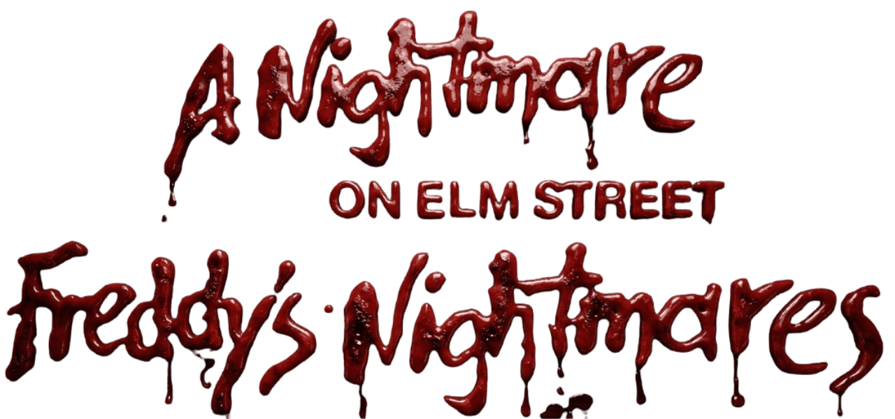
Freddy's Nightmares44 episodes · 2 seasons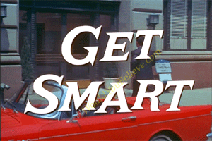
Get Smart138 episodes · 5 seasons Ghostwriter75 parts · 2 seasons Hey Dude66 episodes · 5 seasons + special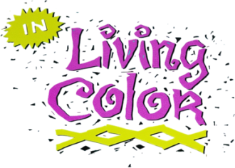
In Living Color126 episodes · 5 seasons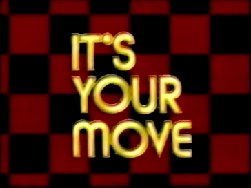
It's Your Move18 episodes Jackass25 episodes · 3 seasons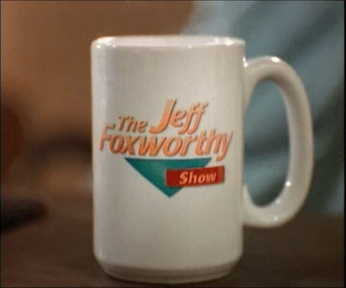
The Jeff Foxworthy Show41 episodes · 2 seasons Joey46 episodes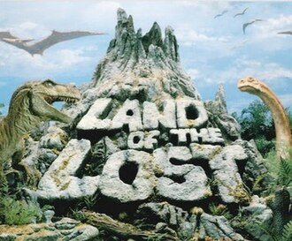
Land of the Lost (1991)26 episodes · 2 seasons Late Night with Conan O'Brien165 episodes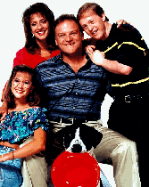
Life Goes On83 episodes · 4 seasons M*A*S*H251 episodes · 11 seasons
MADtv321 episodes · 14 seasons
Malcolm in the Middle151 episodes · 7 seasons
Muppet Babies107 episodes · 8 seasons
M*A*S*H251 episodes · 11 seasons
MADtv321 episodes · 14 seasons
Malcolm in the Middle151 episodes · 7 seasons
Muppet Babies107 episodes · 8 seasons
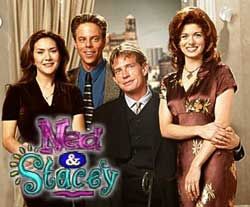
Ned and Stacey46 episodes · 2 seasons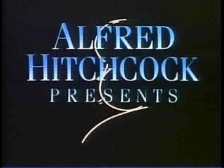
The New Alfred Hitchcock Presents80 episodes · 4 seasons NewsRadio97 episodes · 5 seasons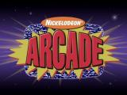
Nick Arcade11 episodes NYPD Blue260 episodes · 12 seasons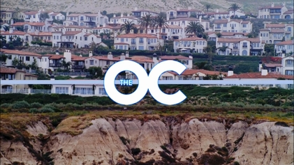
The O.C.92 episodes · 4 seasons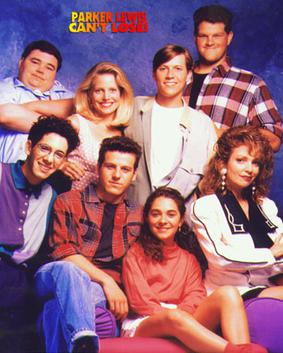
Parker Lewis Can't Lose73 episodes · 3 seasons Popular43 episodes · 2 seasons Salute Your Shorts26 episodes · 2 seasons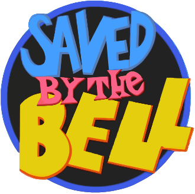
Saved by the Bell120 episodes · 7 seasons The Secret World of Alex Mack78 episodes · 4 seasons Spider-Man: The Animated Series65 episodes · 5 seasons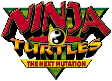
Teenage Mutant Ninja Turtles: The Next Mutation26 episodes The Tick36 episodes · 3 seasons Twin Peaks30 episodes · 2 seasons The Whitest Kids U'Know60 episodes · 5 seasons Wishbone50 episodes · 3 seasons The Wonder Years115 episodes · 6 seasons The Ren & Stimpy Show47 episodes · 4 seasons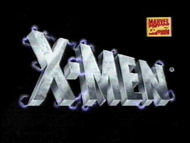
X-Men: The Animated Series76 episodes · 5 seasons Xena: Warrior Princess90 episodes · 4 seasons